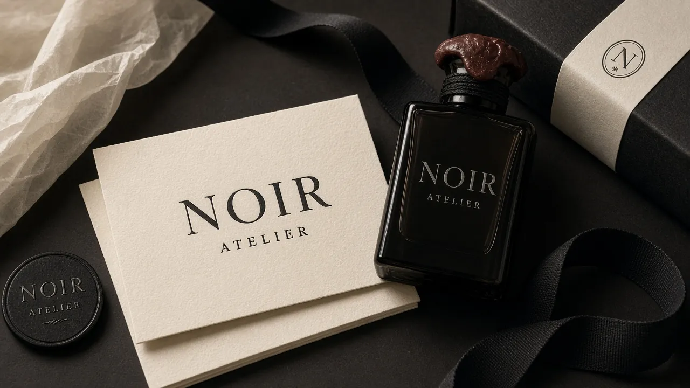
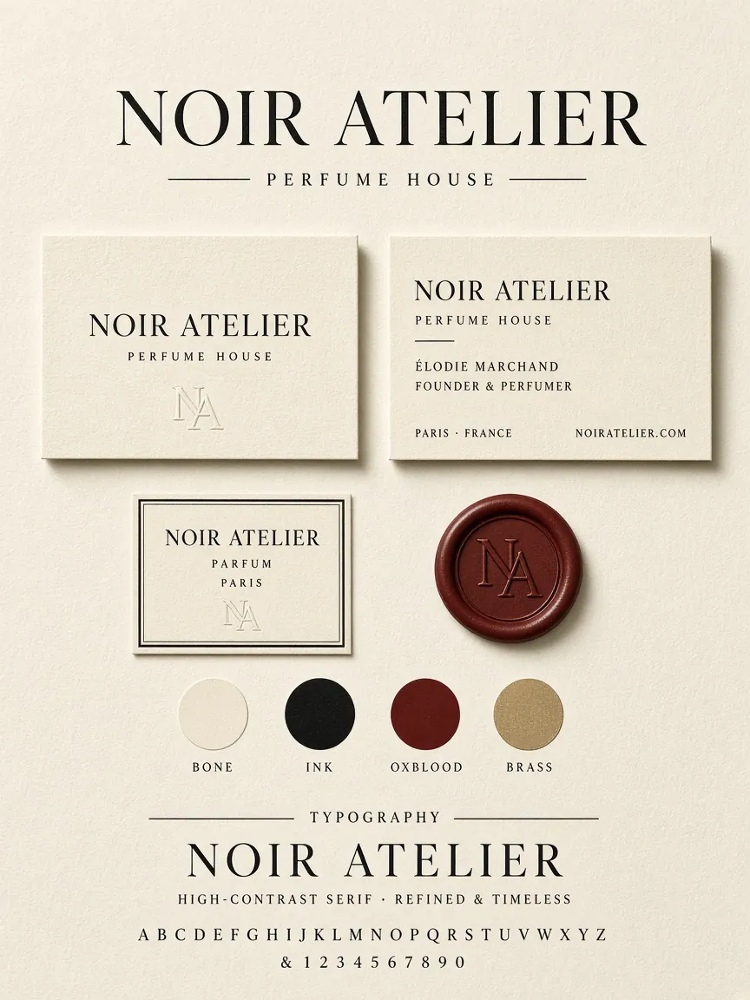

Noir Atelier
Типографика, монограмма и визуальный язык вымышленного парфюмерного дома.
- Формат
- Identity concept
- Материалы
- Имя, знак, палитра, носители
- Статус
- Концепт — не действующий бренд

Идея концепта
Noir Atelier исследует визуальный язык парфюмерного дома: выразительное имя, монограмму и спокойную систему бумажных носителей. Это самостоятельная концепция, а не работа для существующей компании.
Язык формы
Контрастная антиква, широкие поля и монограмма NA формируют характер работы. Светлая бумажная поверхность, тёмный текст и сдержанные цветовые акценты объединяют показанные материалы.
Применение
Использована существующая композиция концепта: бумажные носители, монограмма, палитра и типографика.

Имена, адрес и другие детали внутри концептуального изображения вымышлены.
Статус
Работа демонстрирует подход к визуальной айдентике. У Noir Atelier нет подтверждённого клиентского запуска, поэтому кейс остаётся чётко обозначенным концептом.